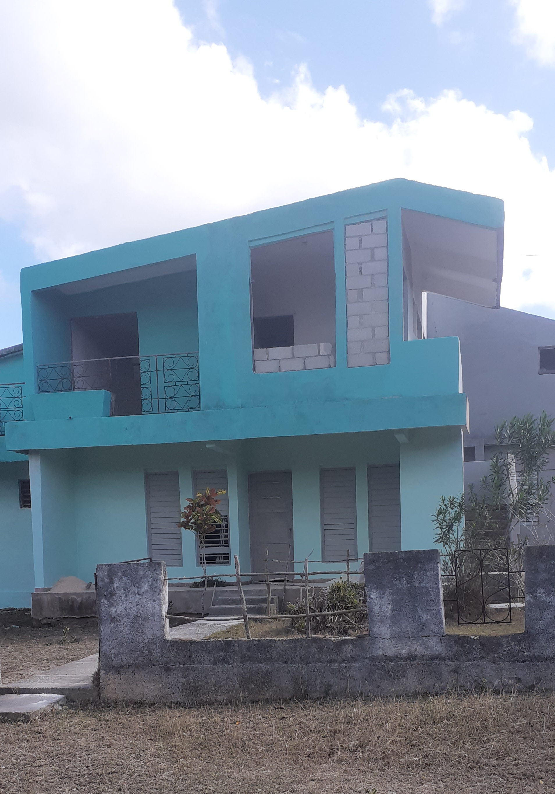
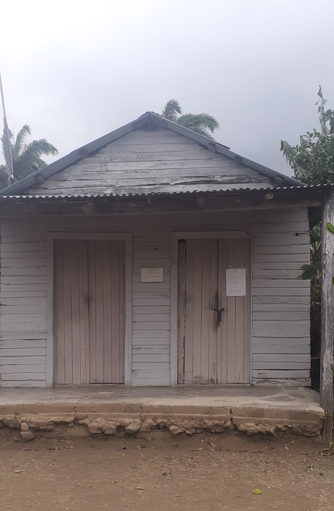

El Sao de los Hidalgos
Por: Eudy Velazquez Garcia
El sao de los hidalgos es un barrio situado en las coordenadas 20.94 latitud norte - 75.89 longitud oeste, perteneciente al municipio Baguanos, provincia Holguín, en el limite de los municipios Banes y Rafael Freyre a 7km de Bijarú. Cuentan las personas de la 3ra edad que antes de 1959 era un lugar prospero, son muy escuchadas las historias de sus surtidas bodegas que funcionaban también como farmacia y sus juegos de billar.
En la actualidad es un apartado y olvidado lugar de la geografía Holguinera. Cuenta con una bodega, una escuela y un consultorio médico poco funcional.
Consultorio
La población es escasa delicada a la agricultura y la ganadería, en su mayoría han emigrado hacia pueblos cercanos, obligados por la falta de necesidades básicas como son la salud, el transporte y un anhelo perdido de sus pobladores: la electricidad.
Bodega
Escuela

Entre sus historias cabe destacar que Antonio Maceo pasó por este lugar y tuvo un combate cerca de allí.